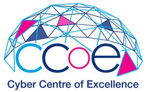
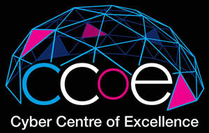

Trade Mark Journal No.2025/022 30 May 2025
UK00004196037 28 April 2025 (9,16,35,41,42,45)
Mark 1

Mark 2

- Class 9
- Computer software for the detection of threats to computer networks; Electronic security systems for home network; Computer software for testing vulnerability in computers and computer networks; Computer software downloadable from global computer networks; Downloadable computer security software; Computer software for encryption; Computer software downloadable from global computer information networks; Internet bots being computer programs; Computer software for wireless network communications; Computer software for monitoring the use of computers and the internet by children; Utility, security and cryptography software; VPN [virtual private network] operating software; Software for ensuring the security of electronic mail; Cloud computing software; Downloadable computer game software via a global computer network and wireless devices; Software for accessing information on a global computer network; Computer software for the creation of firewalls; Computer networking and data communications equipment; Threat detection software; Cryptography software; Software for network and device security; Encryption software; Privacy protection software; Privacy software; Workforce management software; Downloadable computer software for blockchain technology; Telecommunications software; Software to control building environmental, access and security systems; Data communications software.
- Class 16
- Printed educational materials; Printed training materials; Printed promotional material; Printed correspondence course materials; Printed brochures; Printed booklets; Printed pamphlets; Printed instructional material on telecommunications; Printed curricula; Printed forms; Printed publications; Publications (Printed -); Printed books; Printed informational sheets; Printed flyers; Printed leaflets; Printed manuals; Printed stationery; Printed information sheets; Printed patterns; Printed informational flyers; Printed visuals; Paper teaching materials; Printed publications relating to computers; Printed questionnaires.
- Class 35
- Business information services provided online from a global computer network or the internet; Provision of advertising space on a global computer network; Provision of business information via global computer networks; Online advertising on computer networks; Compilation of directories for publishing on global computer networks or the internet; Online advertising on a computer network; On-line promotion of computer networks and websites; Advisory services (Business -) relating to the management of public sector businesses; Business consultancy relating to the administration of information technology; Business management consulting services in the field of information technology; Consultancy and advisory services in the field of business strategy; Assistance and consultancy services in the field of business management of companies in the energy sector.
- Class 41
- Providing non-downloadable electronic publications from a global computer network or the Internet; Providing electronic publications from a global computer network or the Internet, not downloadable; Electronic games services, including provision of computer games on-line or by means of a global computer network; Provision of training via a global computer network; Education services in the field of quantum computing; Teaching and training in business, industry and information technology; Education and training in the field of automotive engineering; Computer training advisory services; Education in the field of computing; Education in the field of computing science; Education services relating to quantum computing; Education and training in the field of business management; Computer education training; Publication of printed matter and printed publications; Publication of educational materials; Publication of printed matter, other than publicity texts, in electronic form.
- Class 42
- Internet security consultancy; Computer security consultancy; Consultancy in the field of computer security; Telecommunication network security consultancy; Computer security threat analysis for protecting data; Updating of computer software relating to computer security and prevention of computer risks; Maintenance of computer software relating to computer security and prevention of computer risks; Professional consultancy relating to computer security; Providing virtual computer systems through cloud computing; Providing virtual computer environments through cloud computing; Computer programming services for electronic data security; Computer security services for protection against illegal network access; Computer virus protection services; Protection services (Computer virus -); Provision of security services for computer networks, computer access and computerised transactions; Computer technology consultancy; Data security consultancy; Providing temporary use of non-downloadable computer software for tracking freight over computer networks, intranets and the internet; Computer security services in the nature of administering digital certificates; Consultancy in the field of security software; Consultancy in the field of data security; Programming of Internet security programs; Consulting in the field of cloud computing networks and applications; Providing software on a global computer network; Provision of computer security risk management programs; Computer consultancy; Development of technologies for the protection of electronic networks; Computer hardware (Consultancy in the field of -); Consultancy in the field of computer hardware; Computer security system monitoring services; Computing consultancy; Telecommunications technology consultancy; Expert consultancy services in connection with computing networks; Cloud computing services; Design and development of virtual private network (VPN) operating software; Providing temporary use of non-downloadable computer software for tracking packages over computer networks, intranets and the internet; Research relating to security; Technological consultancy in the field of aerospace engineering; Consulting services in the field of cloud computing; Monitoring of computer systems for security purposes; Consultancy and information services in the field of information technology architecture and infrastructure; Computer and information technology consultancy services; Consulting services in the field of quantum computing; Design and development of operating software for cloud computing networks; Cloud-based data protection services ; Computer software advisory services; Data encryption services; Information technology services for the pharmaceutical and healthcare industries; Technological advisory services relating to computer programs; Advisory and consultancy services relating to computer hardware.
- Class 45
- Physical security consultancy; Security consultancy; Security assessment of risks; Consultancy in the field of data theft and identity theft; Consulting services in the field of national security; Monitoring of security systems; Regulatory compliance auditing; Legal compliance auditing.
Cyber Centre of Excellence Limited